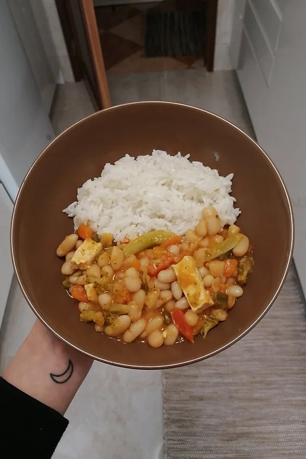

Feijoada de Feijão Branco
Tempo de preparação
15min
Horas de Cozimento
45min
Tempo Total
1h
Porções
4/5

Ingredientes
Feijão:
- (250 g) de feijão branco seco
Acompanhamentos do feijão:
- 3 cenouras lavadas e cortadas em meias luas
- 5 vagens lavadas e cortadas em pequenos retângulos
- 5 cabeças de brócolo lavadas e cortadas em pequenos
- floretes
- ⅓ pimento vermelho lavado e cortado em pequenas tiras
- 3 fatias de tofu cortadas em pequenos retângulos
Molho:
- 1 cebola roxa picada
- 2 dentes de alho picados
- 5 tomates cherry cortados a meio
- 1 folha de loureiro
- polpa de tomate q.b
- azeite q.b
Especiarias:
- sal q.b
- pimenta preta q.b
- pimentão doce q.b
- cominhos q.b
- 1 malagueta pequena para dar um pouco de picante
Instruções
- Coloque o feijão branco de molho na noite anterior, para depois ser mais fácil de o confecionar.
- Prepare o arroz branco para servir com o feijão quando estiver a elaborar o estrugido (mais informações ao correr da receita).
Feijoada vegan:
- Coloque o feijão branco previamente demolhado e escorrido num tacho com a cenoura, a folha de loureiro e o sal. Encha o tacho com água até tapar totalmente o feijão para que este possa cozinhar durante 25 minutos.
- Depois de este estar quase cozido, junte as vagens, o brócolo, o pimento vermelho e coloque o fogão no mínimo para conseguir preparar o molho.
Molho:
- Num tacho pequeno salteie a cebola, o alho e os tomates cherry em azeite até estes ficarem dourados. Quando dourados, acrescente um pouco de água e deixe que o lume apure os sabores na calda. Pode acrescentar um pouco de sal no estrugido caso o feijão necessite de mais.
- De seguida, coe o estrugido para o feijão, junte a polpa de tomate, a pimenta preta, o pimentão doce, cominhos, a malagueta e as tirinhas de tofu.
- Deixe no fogo médio/alto até estar tudo cozinhado e os temperos estarem a seu gosto, e está pronto a servir com o arroz branco!